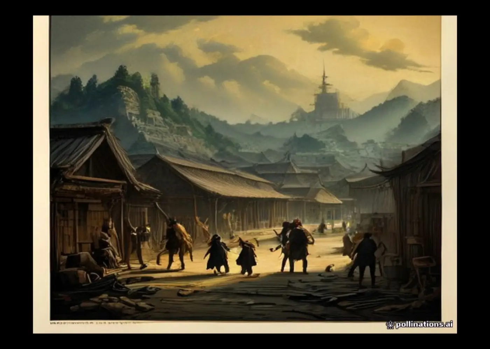
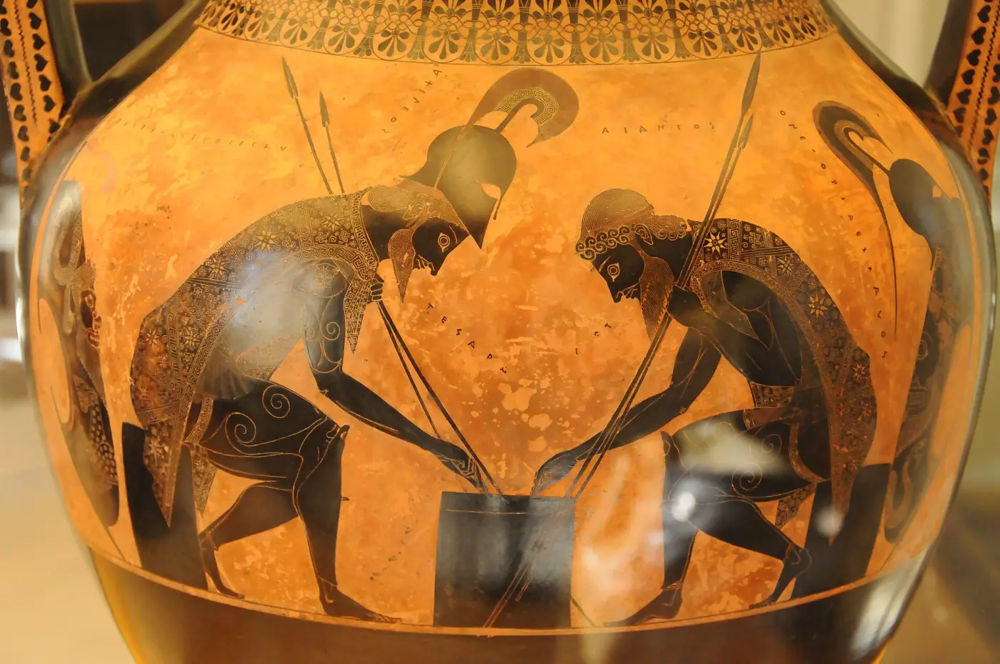
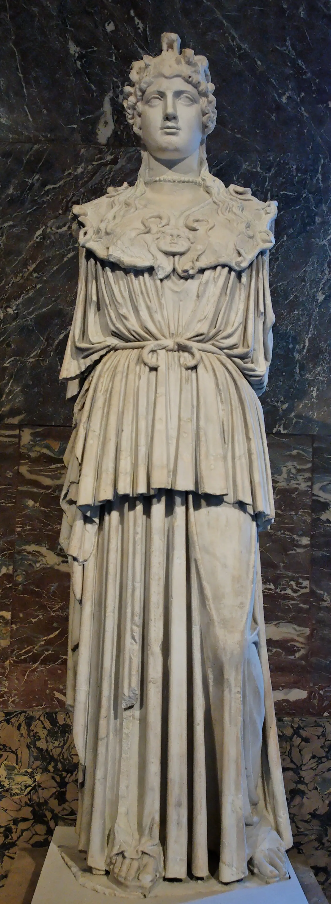
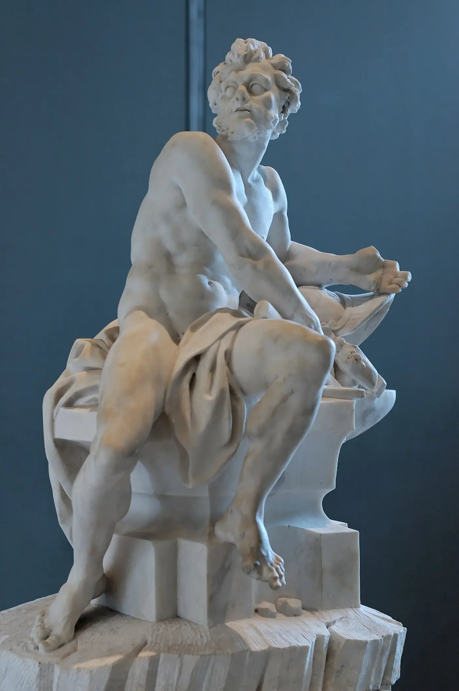

循环史诗 · 归途——英雄们的不同回家路
特洛伊焚尽，诸王登船。《归途》写的是除奥德修斯外诸英雄的回家路——有人平安，有人漂泊，有人死在自家门口。这首诗像一面散场镜子：战争结束了，账才刚刚开始。
特洛伊焚尽，诸王登船。《归途》写的是除奥德修斯外诸英雄的回家路——有人平安，有人漂泊，有人死在自家门口。这首诗像一面散场镜子：战争结束了，账才刚刚开始。
《奥德赛》的团圆之后还有故事吗？有的——《忒勒戈尼亚》给出了循环史诗的终章，也是古代读者吐槽最多的一部：它把一个圆满的结局，又续写成了一个意外。
公元前二十九年，屋大维刚刚终结内战，罗马亟需一个"天命所归"的故事。诗人维吉尔领命：写一部罗马的荷马。十年成书十二卷，临终仍嘱托焚稿——所幸奥古斯都留下它。此后两千年，它是欧洲学生的第一本史诗。
中世纪的欧洲读荷马很难——希腊文几近失传，拉丁译本残缺。但丁没有读过《奥德赛》全文，却在他想象的地狱里，为奥德修斯安排了整个文学史上最惊人的一次"改写"。
1922年，都柏林。一个小人物布卢姆用十八个小时，走完了奥德修斯十年的路。乔伊斯的《尤利西斯》被认为是二十世纪最重要的小说——而它的每一章，都对应着《奥德赛》的一卷。
1911年，亚历山大城的希腊诗人卡瓦菲斯写下十四行小诗《伊萨卡》，把整部《奥德赛》压缩成一句人生建议："愿你的路途漫长。"
别以为荷马只活在书架上。打开电影、剧集与游戏，特洛伊与爱琴海从未离场。
普里阿摩斯亲吻阿喀琉斯之手的一幕，常被称为"西方文学的顶点"。它凭什么？把这一幕逐层拆开看。
"我叫'无人'。"一句谎话，骗过了巨人、骗过了族人，也骗过了命运一瞬。这个骗局为什么能成立？
老乳母欧律克勒娅给"乞丐"洗脚，摸到膝盖上一道旧疤，失声喊出"奥德修斯！"——而叙事在此时突然停住，花七十多行讲起这道疤的来历。这就是著名的"认疤"一场，叙事学的教科书。
赫克托耳与安德洛玛刻的城门诀别，是《伊利亚特》里唯一没有战场与神明的名场面——却让两千八百年来的读者反复落泪。它好在哪里？


两部史诗里登场的有名有姓的神将近二十位。他们在天上吵架、在人间拉偏架、给英雄设局、为凡人流泪——要读懂荷马，得先认识这群"永生的大人物"。本辑逐一深描他们：谱系、性格、在《伊利亚特》与《奥德赛》里的关键戏份、以及后世流传最广的故事。每篇配一幅维基共享资源的经典造像或名画。

